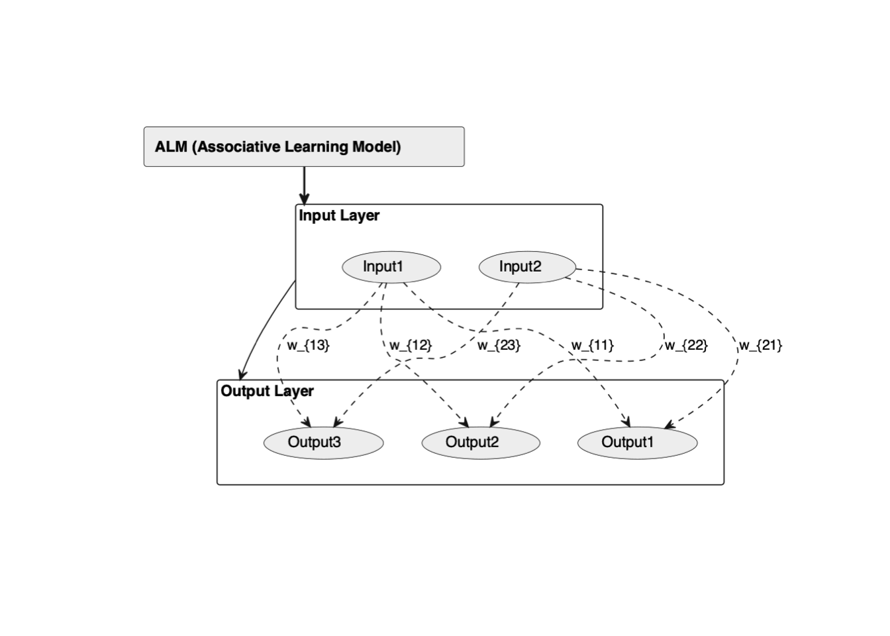

Code
#lapply(c('tidyverse','data.table','igraph','ggraph','kableExtra'),library,character.only=TRUE))
pacman::p_load(tidyverse,data.table,igraph,ggraph,kableExtra) #lapply(c('tidyverse','data.table','igraph','ggraph','kableExtra'),library,character.only=TRUE))
pacman::p_load(tidyverse,data.table,igraph,ggraph,kableExtra) nInput=6
nOutput=10
inNodes <- seq(1,nInput,1) %>% as.integer()
outNodes <- seq(300,1000,length.out=nOutput)%>% as.integer()
weight.mat <<- matrix(0.001,nrow=nOutput,ncol=nInput) # weights initialized to 0 (as in Delosh 1997)
stim <- 1.5
c=.1
inAct <- round(exp(-c*((inNodes-stim)^2)),2)
inActLab <- paste0("x",inNodes,"=",inAct)
outAct <- weight.mat %*% inAct
output.probability <<- outAct/sum(outAct)
outLab=paste0("y",outNodes,"=",round(output.probability,2))
mean.response <<- round(sum(outNodes * output.probability),0)
resp <- mean.response
inFlow <- tibble(expand.grid(from=stim,to=inActLab)) %>% mutate_all(as.character)
outFlow <- tibble(expand.grid(from=outLab,to=mean.response)) %>% mutate_all(as.character)
gd <- tibble(expand.grid(from=inActLab,to=outLab)) %>% mutate_all(as.character) %>%
rbind(inFlow,.) %>% rbind(.,outFlow)
xInc <- .3
yInc=.5
g = graph_from_data_frame(gd,directed=TRUE)
coords2=layout_as_tree(g)
colnames(coords2)=c("y","x")
odf <- as_tibble(coords2) %>%
mutate(label=vertex_attr(g,"name"),
type=c("stim",rep("Input",nInput),rep("Output",nOutput),"Resp"),
x=x*-1) %>%
mutate(y=ifelse(type=="Resp",0,y),xmin=x-xInc,xmax=x+xInc,ymin=y-yInc,ymax=y+yInc)
plot_edges = gd %>% mutate(id=row_number()) %>%
pivot_longer(cols=c("from","to"),names_to="s_e",values_to=("label")) %>%
mutate(label=as.character(label)) %>%
group_by(id) %>%
mutate(weight=sqrt(rnorm(1,mean=0,sd=10)^2)/10) %>%
left_join(odf,by="label") %>%
mutate(xmin=xmin+.02,xmax=xmax-.02)
ggplot() + geom_rect(data = odf,
mapping = aes(xmin = xmin, ymin = ymin,
xmax = xmax, ymax = ymax,
fill = type, colour = type),alpha = 0.01) +
geom_text(data=odf,aes(x=x,y=y,label=label,size=3)) +
geom_path(data=plot_edges,mapping=aes(x=x,y=y,group=id,alpha=weight)) +
# geom_rect(aes(xmin=-1.05,xmax=-.95,ymin=-10,ymax=5),color="red",alpha=.1)+
# geom_rect(aes(xmin=-0.05,xmax=.05,ymin=-10,ymax=5),color="blue",alpha=.1) +
theme_void()
inNodes <- seq(1,6,1) %>% as.integer()
outNodes <- seq(300,1000,50)%>% as.integer()
da <- data.frame(expand.grid(inNodes,outNodes)) %>% magrittr::set_colnames(c("input","output"))
da <- da %>% mutate_all(as.character)
m = graph_from_data_frame(da, directed = TRUE)
coords = layout_with_sugiyama(m)
colnames(coords$layout) = c("y", "x")
coords$layout=coords$layout[,c("x","y")]
plot(m,layout=coords)ggraph(m,layout=coords$layout)+
geom_edge_link0(width=0.2,colour="grey")+
geom_node_point(col="white",size=6)+scale_x_reverse()+
geom_node_text(aes(label=name)) +
# draw rectangle that covers input layer at x=1, min y is min of coords$y and max y is max of coords$y
annotate("rect",xmin=0,xmax=.1,ymin=min(coords$layout[,2]),ymax=max(coords$layout[,2]),fill="grey",alpha=0.7)
geom_rect(xmin=0,xmax=1.1,ymin=min(coords$layout[,2]),ymax=max(coords$layout[,2]),fill="grey",alpha=0.7)geom_rect: linejoin = mitre, na.rm = FALSE
stat_identity: na.rm = FALSE
position_identity P5 = require("p5")
function* createSketch(sketch) {
const element = DOM.element('div');
yield element;
const instance = new P5(sketch, element, true);
try {
while (true) {
yield element;
}
} finally {
instance.remove();
}
}
createSketch(s => {
s.setup = function() {
s.createCanvas(746, 300);
s.textFont('Courgette');
s.textStyle(s.BOLD);
s.textAlign(s.CENTER, s.CENTER)
s.button = s.createButton('clear');
s.button.mousePressed(s.clearCanvas);
s.text('Click and drag to draw', s.width/2, s.height/10);
};
s.draw = function() {
if (s.mouseIsPressed) {
s.fill(0);
s.ellipse(s.mouseX, s.mouseY, 10, 10);
} else {
//s.fill(255);
}
// add text input
};
// add button to clear canvas
s.clearCanvas = function() {
s.clear();
};
// add text
// add slider
}
)